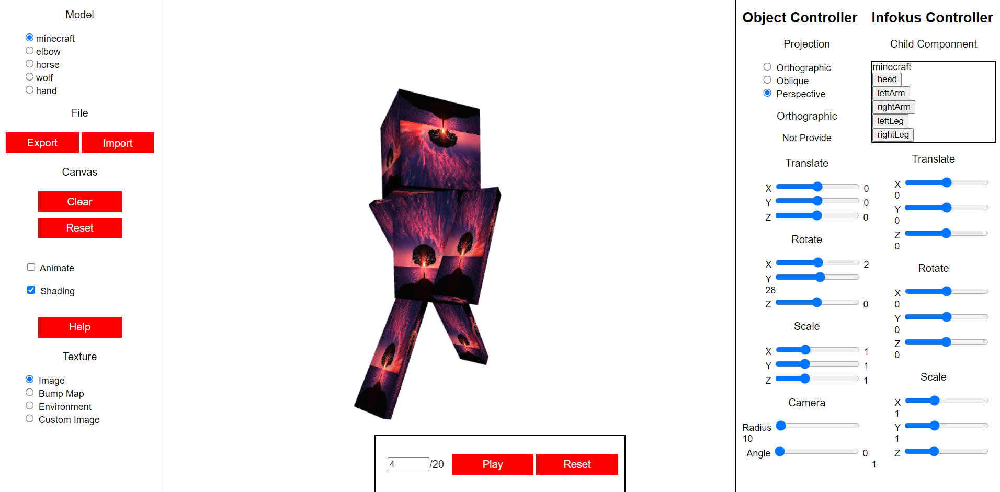

Help!
This page is created to help you use the "Articulated Model" page.
What is "Articulated Model"?
It is a project used to explore articulated model architecture in WebGL. The main goal is
for us to learn how to construct articulated models using WebGL in the browser. Other than
that, we are (forced) to learn shader, projections, and texture mapping. This project
does not require any third party library.

How do I use it?
The page consist of three main parts: the left part, the middle part, and the right part.
- The left part: canvas controller, allowing you to pick the articulated model to render using shading and texture configuration you've picked.
- The middle part: the WebGL canvas where the 3D object will be drawn and the animation controller. You can play the saved animation for each model using the play button.
- The right part: model controller, allowing you to translate, rotate, and scale your preferred model component with a configurable camera using your preferred projection mode. The left controller group focuses on the whole model, while the right controller group focuses on the model component you've chosen.
Models
We have provided five models that you can play around with. We hope you are content with the ability
to manipulate with the provided models. Those models are: minecraft character, elbow, horse, wolf,
and hand. You can find and chose them from the top left corner model list.
You can find the back button in the top left of this page. Thank you for visiting!